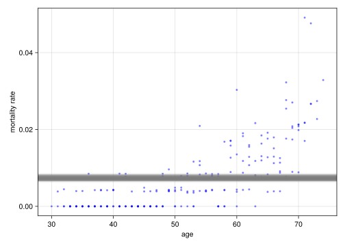
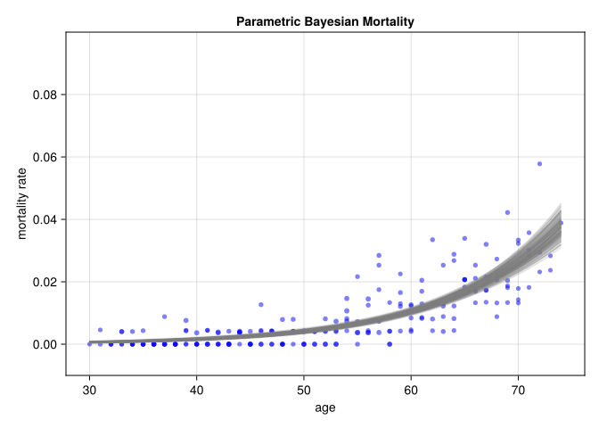
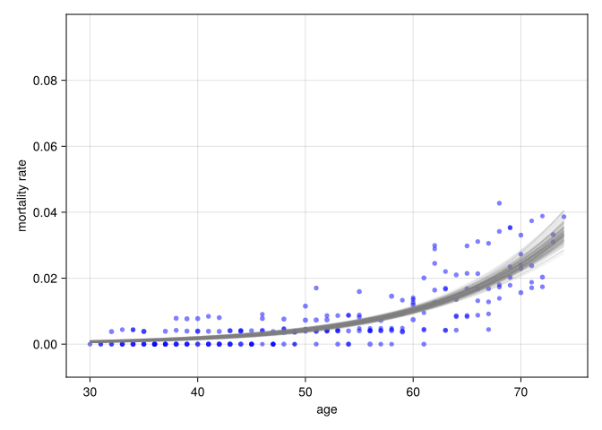
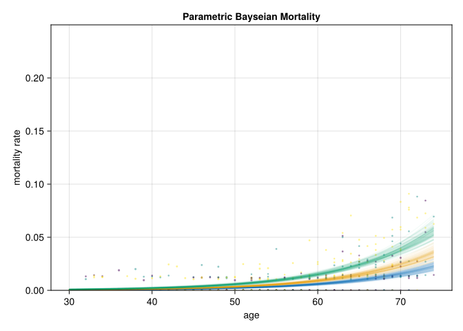
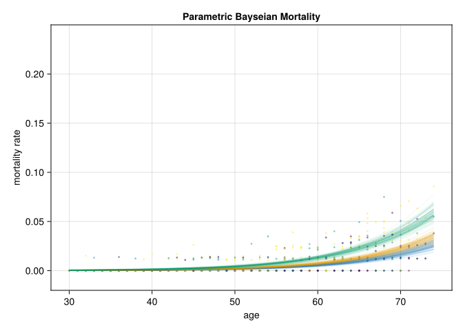

using MortalityTables
using Turing
using UUIDs
using DataFramesMeta
using MCMCChains
using LinearAlgebra
using CairoMakie
using StatsBase
using OffsetArrays28 Bayesian Mortality Modeling
Drafting Notes
Ideas: - First plot graph of outcomes and discuss some key features: - More variance when the subset are smaller
Just plot the data first, with the group colors, to explain what we are looking at and for consistency in subsequent plots
Generate sample data using parameters sampled from chain and show the bands on the associated outcomes.
28.1 Generating fake data
The problem of interest is to look at mortality rates, which are given in terms of exposures (whether or not a life experienced a death in a given year).
We’ll grab some example rates from an insurance table, which has a “selection” component: When someone enters observation, say at age 50, their mortality is path dependent (so for someone who started being observed at 50 will have a different risk/mortality rate at age 55 than someone who started being observed at 45).
Addtionally, there may be additional groups of interest, such as:
- high/medium/low risk classification
- sex
- group (e.g. company, data source, etc.)
- type of insurance product offered
The example data will start with only the risk classification above. ““”
n = 10_000
inforce = map(1:n) do i
(
id=uuid1(),
issue_age=rand(30:70),
risk_level=rand(1:3),
)
end10000-element Vector{@NamedTuple{id::UUID, issue_age::Int64, risk_level::Int64}}:
(id = UUID("37a9c0c2-5802-11ef-0443-0d482c4fe12f"), issue_age = 68, risk_level = 2)
(id = UUID("37a9c0e0-5802-11ef-2334-3d2d70dc0016"), issue_age = 38, risk_level = 3)
(id = UUID("37a9c0e0-5802-11ef-2626-b94e8f1c6a98"), issue_age = 55, risk_level = 3)
(id = UUID("37a9c0e0-5802-11ef-0be3-55c2cd487548"), issue_age = 59, risk_level = 2)
(id = UUID("37a9c0ea-5802-11ef-0283-a94688c58b4a"), issue_age = 63, risk_level = 2)
(id = UUID("37a9c0ea-5802-11ef-32ae-63867808b731"), issue_age = 60, risk_level = 3)
(id = UUID("37a9c0ea-5802-11ef-23f7-1b077f652c34"), issue_age = 45, risk_level = 3)
(id = UUID("37a9c0f4-5802-11ef-3bf1-d18003723d97"), issue_age = 63, risk_level = 2)
(id = UUID("37a9c0f4-5802-11ef-0a7e-71c371a9ce0e"), issue_age = 30, risk_level = 1)
(id = UUID("37a9c0f4-5802-11ef-10da-65093246c6f3"), issue_age = 31, risk_level = 2)
(id = UUID("37a9c0fe-5802-11ef-3493-030f368463ff"), issue_age = 53, risk_level = 1)
(id = UUID("37a9c0fe-5802-11ef-0fe0-2d431d63b62d"), issue_age = 32, risk_level = 3)
(id = UUID("37a9c0fe-5802-11ef-299e-8bc037af67b7"), issue_age = 48, risk_level = 2)
⋮
(id = UUID("37aa3c08-5802-11ef-0afd-17e8d9f818c0"), issue_age = 46, risk_level = 3)
(id = UUID("37aa3c14-5802-11ef-2fca-bbfd2a77f556"), issue_age = 32, risk_level = 1)
(id = UUID("37aa3c14-5802-11ef-3df7-6bf395637e12"), issue_age = 44, risk_level = 3)
(id = UUID("37aa3c14-5802-11ef-29ca-bf574b4266fb"), issue_age = 59, risk_level = 2)
(id = UUID("37aa3c1e-5802-11ef-116d-73dda07930bd"), issue_age = 61, risk_level = 2)
(id = UUID("37aa3c1e-5802-11ef-3339-1dbd4f648c10"), issue_age = 47, risk_level = 3)
(id = UUID("37aa3c1e-5802-11ef-018b-1d38c168ca0b"), issue_age = 65, risk_level = 3)
(id = UUID("37aa3c28-5802-11ef-1d84-7fe972247bb1"), issue_age = 42, risk_level = 3)
(id = UUID("37aa3c28-5802-11ef-0033-8b219d54e1f3"), issue_age = 45, risk_level = 1)
(id = UUID("37aa3c28-5802-11ef-155f-49bfe0c599f0"), issue_age = 38, risk_level = 1)
(id = UUID("37aa3c28-5802-11ef-01ab-95d025c9c6b8"), issue_age = 67, risk_level = 2)
(id = UUID("37aa3c32-5802-11ef-087b-3ba6a555408f"), issue_age = 44, risk_level = 2)base_table = MortalityTables.table("2001 VBT Residual Standard Select and Ultimate - Male Nonsmoker, ANB")
function tabular_mortality(params, issue_age, att_age, risk_level)
q = params.ultimate[att_age]
if risk_level == 1
q *= 0.7
elseif risk_level == 2
q = q
else
q *= 1.5
end
endtabular_mortality (generic function with 1 method)function model_outcomes(inforce, assumption, assumption_params; n_years=5)
outcomes = map(inforce) do pol
alive = 1
sim = map(1:n_years) do t
att_age = pol.issue_age + t - 1
q = assumption(
assumption_params,
pol.issue_age,
att_age,
pol.risk_level
)
if rand() < q
out = (att_age=att_age, exposures=alive, death=1)
alive = 0
out
else
(att_age=att_age, exposures=alive, death=0)
end
end
filter!(x -> x.exposures == 1, sim)
end
df = DataFrame(inforce)
df.outcomes = outcomes
df = flatten(df, :outcomes)
df.att_age = [x.att_age for x in df.outcomes]
df.death = [x.death for x in df.outcomes]
df.exposures = [x.exposures for x in df.outcomes]
select!(df, Not(:outcomes))
end
exposures = model_outcomes(inforce, tabular_mortality, base_table)
data = combine(groupby(exposures, [:issue_age, :att_age])) do subdf
(exposures=nrow(subdf),
deaths=sum(subdf.death),
fraction=sum(subdf.death) / nrow(subdf))
end
data2 = combine(groupby(exposures, [:issue_age, :att_age, :risk_level])) do subdf
(exposures=nrow(subdf),
deaths=sum(subdf.death),
fraction=sum(subdf.death) / nrow(subdf))
end615×6 DataFrame
590 rows omitted
| Row | issue_age | att_age | risk_level | exposures | deaths | fraction |
|---|---|---|---|---|---|---|
| Int64 | Int64 | Int64 | Int64 | Int64 | Float64 | |
| 1 | 30 | 30 | 1 | 64 | 0 | 0.0 |
| 2 | 30 | 30 | 2 | 76 | 0 | 0.0 |
| 3 | 30 | 30 | 3 | 86 | 0 | 0.0 |
| 4 | 30 | 31 | 1 | 64 | 0 | 0.0 |
| 5 | 30 | 31 | 2 | 76 | 0 | 0.0 |
| 6 | 30 | 31 | 3 | 86 | 0 | 0.0 |
| 7 | 30 | 32 | 1 | 64 | 1 | 0.015625 |
| 8 | 30 | 32 | 2 | 76 | 0 | 0.0 |
| 9 | 30 | 32 | 3 | 86 | 0 | 0.0 |
| 10 | 30 | 33 | 1 | 63 | 0 | 0.0 |
| 11 | 30 | 33 | 2 | 76 | 0 | 0.0 |
| 12 | 30 | 33 | 3 | 86 | 0 | 0.0 |
| 13 | 30 | 34 | 1 | 63 | 0 | 0.0 |
| ⋮ | ⋮ | ⋮ | ⋮ | ⋮ | ⋮ | ⋮ |
| 604 | 70 | 71 | 1 | 77 | 2 | 0.025974 |
| 605 | 70 | 71 | 2 | 69 | 0 | 0.0 |
| 606 | 70 | 71 | 3 | 78 | 4 | 0.0512821 |
| 607 | 70 | 72 | 1 | 75 | 3 | 0.04 |
| 608 | 70 | 72 | 2 | 69 | 2 | 0.0289855 |
| 609 | 70 | 72 | 3 | 74 | 4 | 0.0540541 |
| 610 | 70 | 73 | 1 | 72 | 2 | 0.0277778 |
| 611 | 70 | 73 | 2 | 67 | 2 | 0.0298507 |
| 612 | 70 | 73 | 3 | 70 | 3 | 0.0428571 |
| 613 | 70 | 74 | 1 | 70 | 0 | 0.0 |
| 614 | 70 | 74 | 2 | 65 | 1 | 0.0153846 |
| 615 | 70 | 74 | 3 | 67 | 2 | 0.0298507 |
28.2 1: A single binomial parameter model
Estiamte \(q\), the average mortality rate, not accounting for any variation within the population/sample. Our model is defines as:
\[ q ~ Beta(1,1) p(death) ~ Binomial(q) \]
@model function mortality(data, deaths)
q ~ Beta(1, 1)
for i = 1:nrow(data)
deaths[i] ~ Binomial(data.exposures[i], q)
end
end
m1 = mortality(data, data.deaths)DynamicPPL.Model{typeof(mortality), (:data, :deaths), (), (), Tuple{DataFrame, Vector{Int64}}, Tuple{}, DynamicPPL.DefaultContext}(mortality, (data = 205×5 DataFrame
Row │ issue_age att_age exposures deaths fraction
│ Int64 Int64 Int64 Int64 Float64
─────┼───────────────────────────────────────────────────
1 │ 30 30 226 0 0.0
2 │ 30 31 226 0 0.0
3 │ 30 32 226 1 0.00442478
4 │ 30 33 225 0 0.0
5 │ 30 34 225 0 0.0
6 │ 31 31 263 0 0.0
7 │ 31 32 263 0 0.0
8 │ 31 33 263 0 0.0
9 │ 31 34 263 0 0.0
10 │ 31 35 263 1 0.00380228
11 │ 32 32 240 0 0.0
⋮ │ ⋮ ⋮ ⋮ ⋮ ⋮
196 │ 69 69 252 6 0.0238095
197 │ 69 70 246 7 0.0284553
198 │ 69 71 239 11 0.0460251
199 │ 69 72 228 6 0.0263158
200 │ 69 73 222 10 0.045045
201 │ 70 70 235 11 0.0468085
202 │ 70 71 224 6 0.0267857
203 │ 70 72 218 9 0.0412844
204 │ 70 73 209 7 0.0334928
205 │ 70 74 202 3 0.0148515
184 rows omitted, deaths = [0, 0, 1, 0, 0, 0, 0, 0, 0, 1 … 6, 7, 11, 6, 10, 11, 6, 9, 7, 3]), NamedTuple(), DynamicPPL.DefaultContext())
28.2.1 Sampling from the posterior
We use a No-U-Turn-Sampler (NUTS) technique to sample multile chains at once:
num_chains = 4
chain = sample(m1, NUTS(), MCMCThreads(), 400, num_chains)Chains MCMC chain (400×13×4 Array{Float64, 3}):
Iterations = 201:1:600
Number of chains = 4
Samples per chain = 400
Wall duration = 1.96 seconds
Compute duration = 7.78 seconds
parameters = q
internals = lp, n_steps, is_accept, acceptance_rate, log_density, hamiltonian_energy, hamiltonian_energy_error, max_hamiltonian_energy_error, tree_depth, numerical_error, step_size, nom_step_size
Summary Statistics
parameters mean std mcse ess_bulk ess_tail rhat ⋯
Symbol Float64 Float64 Float64 Float64 Float64 Float64 ⋯
q 0.0079 0.0004 0.0000 628.5433 1204.2194 1.0025 ⋯
1 column omitted
Quantiles
parameters 2.5% 25.0% 50.0% 75.0% 97.5%
Symbol Float64 Float64 Float64 Float64 Float64
q 0.0072 0.0077 0.0079 0.0082 0.0087
Here, we have asked for the outcomes to be modeled via a single parameter for the population. We see that the posterior distirbution of \(q\) is very close to the overall population mortality rate:
sum(data.deaths) / sum(data.exposures)0.007916049282481174However, We can see that the sampling of possible posterior parameters doesn’t really fit the data very well since our model was so simplified. The lines represent the posterior binomial probability.
This is saying that for the observed data, if there really is just a single probability p that governs the true process that came up with the data, there’s a pretty narrow range of values it could possibly be:
let
data_weight = log.(data.exposures)
#data_weight = .√(data_weight ./ maximum(data_weight) .* 20)
f = Figure(title="Parametric Bayseian Mortality"
)
ax = Axis(f[1, 1],
xlabel="age",
ylabel="mortality rate",
# ylims=(0.0, 0.25),
)
scatter!(ax,
data.att_age,
data.fraction,
markersize=data_weight,
color=(:blue, 0.5),
label="Experience data point (size indicates relative exposure quantity)",)
# show n samples from the posterior plotted on the graph
n = 300
ages = sort!(unique(data.att_age))
q_posterior = sample(chain, n)[:q]
for i in 1:n
hlines!(ax, [q_posterior[i]], color=(:grey, 0.1))
end
# Need to simulate at indivudal level and then aggregate?
sim05 = Float64[]
sim95 = Float64[]
for r in eachrow(data)
outcomes = map(1:n) do i
rand(Binomial(r.exposures, q_posterior[i]), 500)
end
push!(sim05, quantile(Iterators.flatten(outcomes), 0.05) / r.exposures)
push!(sim95, quantile(Iterators.flatten(outcomes), 0.95) / r.exposures)
end
f
end
let
n = 300
q_posterior = sample(chain, n)[:q]
end2-dimensional AxisArray{Float64,2,...} with axes:
:iter, 1:300
:chain, 1:1
And data, a 300×1 Matrix{Float64}:
0.008781996626735287
0.007421766715238843
0.008650454301111709
0.007377204583966204
0.009185839849048404
0.00748324960721149
0.008610902238622844
0.008004676063228699
0.008629797690071007
0.007048969522399306
0.00783392750752304
0.0071383859586159676
0.0073756279622759
⋮
0.008236747430569945
0.007810547708768349
0.008370125475848493
0.008054515383309771
0.007208754965743872
0.008353181838175293
0.007700675419424496
0.008098173174807736
0.007527104139498886
0.008376183149667333
0.007602592329155681
0.00764121343388987228.3 2. Parametric model
In this example, we utilize a MakehamBeard parameterization because it’s already very similar in form to a logistic function. This is important because our desired output is a probability (ie the probablity of a death at a given age), so the value must be constrained to be in the interval between zero and one.
The prior values for a,b,c, and k are chosen to constrain the hazard (mortality) rate to be between zero and one.
This isn’t an ideal parameterization (e.g. we aren’t including information about the select underwriting period), but is an example of utilizing Bayesian techniques on life experience data. ”
@model function mortality2(data, deaths)
a ~ Exponential(0.1)
b ~ Exponential(0.1)
c = 0.0
k ~ truncated(Exponential(1), 1, Inf)
# use the variables to create a parametric mortality model
m = MortalityTables.MakehamBeard(; a, b, c, k)
# loop through the rows of the dataframe to let Turing observe the data
# and how consistent the parameters are with the data
for i = 1:nrow(data)
age = data.att_age[i]
q = MortalityTables.hazard(m, age)
deaths[i] ~ Binomial(data.exposures[i], q)
end
endmortality2 (generic function with 2 methods)We combine the model with the data and sample from the posterior using a similar call as before:
m2 = mortality2(data, data.deaths)
chain2 = sample(m2, NUTS(), MCMCThreads(), 400, num_chains)Chains MCMC chain (400×15×4 Array{Float64, 3}):
Iterations = 201:1:600
Number of chains = 4
Samples per chain = 400
Wall duration = 6.65 seconds
Compute duration = 25.34 seconds
parameters = a, b, k
internals = lp, n_steps, is_accept, acceptance_rate, log_density, hamiltonian_energy, hamiltonian_energy_error, max_hamiltonian_energy_error, tree_depth, numerical_error, step_size, nom_step_size
Summary Statistics
parameters mean std mcse ess_bulk ess_tail rhat e ⋯
Symbol Float64 Float64 Float64 Float64 Float64 Float64 ⋯
a 0.0000 0.0000 0.0000 449.5818 540.8060 1.0022 ⋯
b 0.0948 0.0059 0.0003 458.9859 556.1935 1.0035 ⋯
k 1.9192 0.9405 0.0312 725.7135 603.0581 1.0030 ⋯
1 column omitted
Quantiles
parameters 2.5% 25.0% 50.0% 75.0% 97.5%
Symbol Float64 Float64 Float64 Float64 Float64
a 0.0000 0.0000 0.0000 0.0000 0.0001
b 0.0837 0.0909 0.0946 0.0988 0.1067
k 1.0268 1.2494 1.5971 2.3095 4.5162
summarize(chain2)
plot(chain2)
28.3.1 Plotting samples from the posterior
We can see that the sampling of possible posterior parameters fits the data well:
let
data_weight = data.exposures ./ sum(data.exposures)
data_weight = .√(data_weight ./ maximum(data_weight) .* 20)
p = scatter(
data.att_age,
data.fraction,
markersize=data_weight,
alpha=0.5,
label="Experience data point (size indicates relative exposure quantity)",
axis=(
xlabel="age",
limits=(nothing, nothing, 0.0, 0.25),
ylabel="mortality rate",
title="Parametric Bayseian Mortality"
)
)
# show n samples from the posterior plotted on the graph
n = 300
ages = sort!(unique(data.att_age))
for i in 1:n
s = sample(chain2, 1)
a = only(s[:a])
b = only(s[:b])
k = only(s[:k])
c = 0
m = MortalityTables.MakehamBeard(; a, b, c, k)
lines!(ages, age -> MortalityTables.hazard(m, age), alpha=0.1, label="")
end
p
end
let
data_weight = log.(data.exposures)
#data_weight = .√(data_weight ./ maximum(data_weight) .* 20)
f = Figure(title="Parametric Bayseian Mortality"
)
ax = Axis(f[1, 1],
xlabel="age",
ylabel="mortality rate",
# ylims=(0.0, 0.25),
)
scatter!(ax,
data.att_age,
data.fraction,
markersize=data_weight,
color=(:blue, 0.5),
label="Experience data point (size indicates relative exposure quantity)",)
# show n samples from the posterior plotted on the graph
n = 300
ages = sort!(unique(data.att_age))
for i in 1:n
s = sample(chain2, 1)
a = only(s[:a])
b = only(s[:b])
k = only(s[:k])
c = 0
m = MortalityTables.MakehamBeard(; a, b, c, k)
qs = MortalityTables.hazard.(m, ages)
lines!(ax, ages, qs, color=(:grey, 0.1))
end
f
end
28.4 3. Parametric model
This model extends the prior to create a multi-level model. Each risk class (risk_level) gets its own \(a\) paramater in the MakhamBeard model. The prior for \(a_i\) is determined by the hyperparameter \(\bar{a}\).
@model function mortality3(data, deaths)
risk_levels = length(levels(data.risk_level))
b ~ Exponential(0.1)
ā ~ Exponential(0.1)
a ~ filldist(Exponential(ā), risk_levels)
c = 0
k ~ truncated(Exponential(1), 1, Inf)
# use the variables to create a parametric mortality model
# loop through the rows of the dataframe to let Turing observe the data
# and how consistent the parameters are with the data
for i = 1:nrow(data)
risk = data.risk_level[i]
m = MortalityTables.MakehamBeard(; a=a[risk], b, c, k)
age = data.att_age[i]
q = MortalityTables.hazard(m, age)
deaths[i] ~ Binomial(data.exposures[i], q)
end
end
m3 = mortality3(data2, data2.deaths)
chain3 = sample(m3, NUTS(), 1000)
summarize(chain3)parameters mean std mcse ess_bulk ess_tail rhat e ⋯ Symbol Float64 Float64 Float64 Float64 Float64 Float64 ⋯ b 0.0952 0.0057 0.0003 288.6057 295.7111 1.0010 ⋯ ā 0.0001 0.0002 0.0000 389.8215 419.8732 1.0004 ⋯ a[1] 0.0000 0.0000 0.0000 291.1727 329.0768 1.0012 ⋯ a[2] 0.0000 0.0000 0.0000 295.8883 347.7724 1.0009 ⋯ a[3] 0.0000 0.0000 0.0000 294.8813 346.8844 1.0010 ⋯ k 1.8462 0.8361 0.0301 513.4123 362.1851 1.0031 ⋯ 1 column omitted
let data = data2
data_weight = data.exposures ./ sum(data.exposures)
data_weight = .√(data_weight ./ maximum(data_weight) .* 20)
color_i = data.risk_level
p = scatter(
data.att_age,
data.fraction,
markersize=data_weight,
alpha=0.5,
color=color_i,
label="Experience data point (size indicates relative exposure quantity)",
axis=(
xlabel="age",
limits=(nothing, nothing, 0.0, 0.25),
ylabel="mortality rate",
title="Parametric Bayseian Mortality"
)
)
# show n samples from the posterior plotted on the graph
n = 100
ages = sort!(unique(data.att_age))
for r in 1:3
for i in 1:n
s = sample(chain3, 1)
a = only(s[Symbol("a[$r]")])
b = only(s[:b])
k = only(s[:k])
c = 0
m = MortalityTables.MakehamBeard(; a, b, c, k)
if i == 1
lines!(ages, age -> MortalityTables.hazard(m, age), label="risk level $r", alpha=0.2, color=(CairoMakie.Makie.wong_colors()[r], 0.2))
else
lines!(ages, age -> MortalityTables.hazard(m, age), label="", alpha=0.2, color=(CairoMakie.Makie.wong_colors()[r], 0.2))
end
end
end
p
end
28.5 Handling non-unit exposures
The key is to use the Poisson distribution, which is a continuous approximation to the Binomial distribution:
@model function mortality4(data, deaths)
risk_levels = length(levels(data.risk_level))
b ~ Exponential(0.1)
ā ~ Exponential(0.1)
a ~ filldist(Exponential(ā), risk_levels)
c ~ Beta(4, 18)
k ~ truncated(Exponential(1), 1, Inf)
# use the variables to create a parametric mortality model
# loop through the rows of the dataframe to let Turing observe the data
# and how consistent the parameters are with the data
for i = 1:nrow(data)
risk = data.risk_level[i]
m = MortalityTables.MakehamBeard(; a=a[risk], b, c, k)
age = data.att_age[i]
q = MortalityTables.hazard(m, age)
deaths[i] ~ Poisson(data.exposures[i] * q)
end
end
m4 = mortality4(data2, data2.deaths)
chain4 = sample(m4, NUTS(), 1000)Chains MCMC chain (1000×19×1 Array{Float64, 3}):
Iterations = 501:1:1500
Number of chains = 1
Samples per chain = 1000
Wall duration = 33.14 seconds
Compute duration = 33.14 seconds
parameters = b, ā, a[1], a[2], a[3], c, k
internals = lp, n_steps, is_accept, acceptance_rate, log_density, hamiltonian_energy, hamiltonian_energy_error, max_hamiltonian_energy_error, tree_depth, numerical_error, step_size, nom_step_size
Summary Statistics
parameters mean std mcse ess_bulk ess_tail rhat e ⋯
Symbol Float64 Float64 Float64 Float64 Float64 Float64 ⋯
b 0.1148 0.0098 0.0008 165.5737 244.6831 1.0012 ⋯
ā 0.0000 0.0001 0.0000 267.2985 440.2016 1.0007 ⋯
a[1] 0.0000 0.0000 0.0000 166.9197 251.0772 1.0008 ⋯
a[2] 0.0000 0.0000 0.0000 163.0287 245.9395 1.0016 ⋯
a[3] 0.0000 0.0000 0.0000 163.1058 291.4247 1.0007 ⋯
c 0.0011 0.0004 0.0000 254.5647 336.5924 1.0066 ⋯
k 1.9651 0.9235 0.0358 420.4469 381.6517 1.0008 ⋯
1 column omitted
Quantiles
parameters 2.5% 25.0% 50.0% 75.0% 97.5%
Symbol Float64 Float64 Float64 Float64 Float64
b 0.0954 0.1079 0.1147 0.1213 0.1359
ā 0.0000 0.0000 0.0000 0.0000 0.0002
a[1] 0.0000 0.0000 0.0000 0.0000 0.0000
a[2] 0.0000 0.0000 0.0000 0.0000 0.0000
a[3] 0.0000 0.0000 0.0000 0.0000 0.0000
c 0.0004 0.0008 0.0011 0.0013 0.0019
k 1.0292 1.2773 1.6623 2.3807 4.3671
risk_factors4 = [mean(chain4[Symbol("a[$f]")]) for f in 1:3]
risk_factors4 ./ risk_factors4[2]
let data = data2
data_weight = data.exposures ./ sum(data.exposures)
data_weight = .√(data_weight ./ maximum(data_weight) .* 20)
color_i = data.risk_level
p = scatter(
data.att_age,
data.fraction,
markersize=data_weight,
alpha=0.5,
color=color_i,
label="Experience data point (size indicates relative exposure quantity)",
axis=(xlabel="age",
limits=(nothing, nothing, 0.0, 0.25),
ylabel="mortality rate",
title="Parametric Bayseian Mortality"
)
)
# show n samples from the posterior plotted on the graph
n = 100
ages = sort!(unique(data.att_age))
for r in 1:3
for i in 1:n
s = sample(chain4, 1)
a = only(s[Symbol("a[$r]")])
b = only(s[:b])
k = only(s[:k])
c = 0
m = MortalityTables.MakehamBeard(; a, b, c, k)
if i == 1
lines!(ages, age -> MortalityTables.hazard(m, age), label="risk level $r", alpha=0.2, color=(CairoMakie.Makie.wong_colors()[r], 0.2))
else
lines!(ages, age -> MortalityTables.hazard(m, age), label="", alpha=0.2, color=(CairoMakie.Makie.wong_colors()[r], 0.2))
end
end
end
p
end
28.6 Predictions
We can generate predictive estimates by passing a vector of missing in place of the outcome variables and then calling predict.
We get a table of values where each row is the the prediction implied by the corresponding chain sample, and the columns are the predicted value for each of the outcomes in our original dataset.
preds = predict(mortality4(data2, fill(missing, length(data2.deaths))), chain4)Chains MCMC chain (1000×615×1 Array{Float64, 3}):
Iterations = 1:1:1000
Number of chains = 1
Samples per chain = 1000
parameters = deaths[1], deaths[2], deaths[3], deaths[4], deaths[5], deaths[6], deaths[7], deaths[8], deaths[9], deaths[10], deaths[11], deaths[12], deaths[13], deaths[14], deaths[15], deaths[16], deaths[17], deaths[18], deaths[19], deaths[20], deaths[21], deaths[22], deaths[23], deaths[24], deaths[25], deaths[26], deaths[27], deaths[28], deaths[29], deaths[30], deaths[31], deaths[32], deaths[33], deaths[34], deaths[35], deaths[36], deaths[37], deaths[38], deaths[39], deaths[40], deaths[41], deaths[42], deaths[43], deaths[44], deaths[45], deaths[46], deaths[47], deaths[48], deaths[49], deaths[50], deaths[51], deaths[52], deaths[53], deaths[54], deaths[55], deaths[56], deaths[57], deaths[58], deaths[59], deaths[60], deaths[61], deaths[62], deaths[63], deaths[64], deaths[65], deaths[66], deaths[67], deaths[68], deaths[69], deaths[70], deaths[71], deaths[72], deaths[73], deaths[74], deaths[75], deaths[76], deaths[77], deaths[78], deaths[79], deaths[80], deaths[81], deaths[82], deaths[83], deaths[84], deaths[85], deaths[86], deaths[87], deaths[88], deaths[89], deaths[90], deaths[91], deaths[92], deaths[93], deaths[94], deaths[95], deaths[96], deaths[97], deaths[98], deaths[99], deaths[100], deaths[101], deaths[102], deaths[103], deaths[104], deaths[105], deaths[106], deaths[107], deaths[108], deaths[109], deaths[110], deaths[111], deaths[112], deaths[113], deaths[114], deaths[115], deaths[116], deaths[117], deaths[118], deaths[119], deaths[120], deaths[121], deaths[122], deaths[123], deaths[124], deaths[125], deaths[126], deaths[127], deaths[128], deaths[129], deaths[130], deaths[131], deaths[132], deaths[133], deaths[134], deaths[135], deaths[136], deaths[137], deaths[138], deaths[139], deaths[140], deaths[141], deaths[142], deaths[143], deaths[144], deaths[145], deaths[146], deaths[147], deaths[148], deaths[149], deaths[150], deaths[151], deaths[152], deaths[153], deaths[154], deaths[155], deaths[156], deaths[157], deaths[158], deaths[159], deaths[160], deaths[161], deaths[162], deaths[163], deaths[164], deaths[165], deaths[166], deaths[167], deaths[168], deaths[169], deaths[170], deaths[171], deaths[172], deaths[173], deaths[174], deaths[175], deaths[176], deaths[177], deaths[178], deaths[179], deaths[180], deaths[181], deaths[182], deaths[183], deaths[184], deaths[185], deaths[186], deaths[187], deaths[188], deaths[189], deaths[190], deaths[191], deaths[192], deaths[193], deaths[194], deaths[195], deaths[196], deaths[197], deaths[198], deaths[199], deaths[200], deaths[201], deaths[202], deaths[203], deaths[204], deaths[205], deaths[206], deaths[207], deaths[208], deaths[209], deaths[210], deaths[211], deaths[212], deaths[213], deaths[214], deaths[215], deaths[216], deaths[217], deaths[218], deaths[219], deaths[220], deaths[221], deaths[222], deaths[223], deaths[224], deaths[225], deaths[226], deaths[227], deaths[228], deaths[229], deaths[230], deaths[231], deaths[232], deaths[233], deaths[234], deaths[235], deaths[236], deaths[237], deaths[238], deaths[239], deaths[240], deaths[241], deaths[242], deaths[243], deaths[244], deaths[245], deaths[246], deaths[247], deaths[248], deaths[249], deaths[250], deaths[251], deaths[252], deaths[253], deaths[254], deaths[255], deaths[256], deaths[257], deaths[258], deaths[259], deaths[260], deaths[261], deaths[262], deaths[263], deaths[264], deaths[265], deaths[266], deaths[267], deaths[268], deaths[269], deaths[270], deaths[271], deaths[272], deaths[273], deaths[274], deaths[275], deaths[276], deaths[277], deaths[278], deaths[279], deaths[280], deaths[281], deaths[282], deaths[283], deaths[284], deaths[285], deaths[286], deaths[287], deaths[288], deaths[289], deaths[290], deaths[291], deaths[292], deaths[293], deaths[294], deaths[295], deaths[296], deaths[297], deaths[298], deaths[299], deaths[300], deaths[301], deaths[302], deaths[303], deaths[304], deaths[305], deaths[306], deaths[307], deaths[308], deaths[309], deaths[310], deaths[311], deaths[312], deaths[313], deaths[314], deaths[315], deaths[316], deaths[317], deaths[318], deaths[319], deaths[320], deaths[321], deaths[322], deaths[323], deaths[324], deaths[325], deaths[326], deaths[327], deaths[328], deaths[329], deaths[330], deaths[331], deaths[332], deaths[333], deaths[334], deaths[335], deaths[336], deaths[337], deaths[338], deaths[339], deaths[340], deaths[341], deaths[342], deaths[343], deaths[344], deaths[345], deaths[346], deaths[347], deaths[348], deaths[349], deaths[350], deaths[351], deaths[352], deaths[353], deaths[354], deaths[355], deaths[356], deaths[357], deaths[358], deaths[359], deaths[360], deaths[361], deaths[362], deaths[363], deaths[364], deaths[365], deaths[366], deaths[367], deaths[368], deaths[369], deaths[370], deaths[371], deaths[372], deaths[373], deaths[374], deaths[375], deaths[376], deaths[377], deaths[378], deaths[379], deaths[380], deaths[381], deaths[382], deaths[383], deaths[384], deaths[385], deaths[386], deaths[387], deaths[388], deaths[389], deaths[390], deaths[391], deaths[392], deaths[393], deaths[394], deaths[395], deaths[396], deaths[397], deaths[398], deaths[399], deaths[400], deaths[401], deaths[402], deaths[403], deaths[404], deaths[405], deaths[406], deaths[407], deaths[408], deaths[409], deaths[410], deaths[411], deaths[412], deaths[413], deaths[414], deaths[415], deaths[416], deaths[417], deaths[418], deaths[419], deaths[420], deaths[421], deaths[422], deaths[423], deaths[424], deaths[425], deaths[426], deaths[427], deaths[428], deaths[429], deaths[430], deaths[431], deaths[432], deaths[433], deaths[434], deaths[435], deaths[436], deaths[437], deaths[438], deaths[439], deaths[440], deaths[441], deaths[442], deaths[443], deaths[444], deaths[445], deaths[446], deaths[447], deaths[448], deaths[449], deaths[450], deaths[451], deaths[452], deaths[453], deaths[454], deaths[455], deaths[456], deaths[457], deaths[458], deaths[459], deaths[460], deaths[461], deaths[462], deaths[463], deaths[464], deaths[465], deaths[466], deaths[467], deaths[468], deaths[469], deaths[470], deaths[471], deaths[472], deaths[473], deaths[474], deaths[475], deaths[476], deaths[477], deaths[478], deaths[479], deaths[480], deaths[481], deaths[482], deaths[483], deaths[484], deaths[485], deaths[486], deaths[487], deaths[488], deaths[489], deaths[490], deaths[491], deaths[492], deaths[493], deaths[494], deaths[495], deaths[496], deaths[497], deaths[498], deaths[499], deaths[500], deaths[501], deaths[502], deaths[503], deaths[504], deaths[505], deaths[506], deaths[507], deaths[508], deaths[509], deaths[510], deaths[511], deaths[512], deaths[513], deaths[514], deaths[515], deaths[516], deaths[517], deaths[518], deaths[519], deaths[520], deaths[521], deaths[522], deaths[523], deaths[524], deaths[525], deaths[526], deaths[527], deaths[528], deaths[529], deaths[530], deaths[531], deaths[532], deaths[533], deaths[534], deaths[535], deaths[536], deaths[537], deaths[538], deaths[539], deaths[540], deaths[541], deaths[542], deaths[543], deaths[544], deaths[545], deaths[546], deaths[547], deaths[548], deaths[549], deaths[550], deaths[551], deaths[552], deaths[553], deaths[554], deaths[555], deaths[556], deaths[557], deaths[558], deaths[559], deaths[560], deaths[561], deaths[562], deaths[563], deaths[564], deaths[565], deaths[566], deaths[567], deaths[568], deaths[569], deaths[570], deaths[571], deaths[572], deaths[573], deaths[574], deaths[575], deaths[576], deaths[577], deaths[578], deaths[579], deaths[580], deaths[581], deaths[582], deaths[583], deaths[584], deaths[585], deaths[586], deaths[587], deaths[588], deaths[589], deaths[590], deaths[591], deaths[592], deaths[593], deaths[594], deaths[595], deaths[596], deaths[597], deaths[598], deaths[599], deaths[600], deaths[601], deaths[602], deaths[603], deaths[604], deaths[605], deaths[606], deaths[607], deaths[608], deaths[609], deaths[610], deaths[611], deaths[612], deaths[613], deaths[614], deaths[615]
internals =
Summary Statistics
parameters mean std mcse ess_bulk ess_tail rhat ⋯
Symbol Float64 Float64 Float64 Float64 Float64 Float64 ⋯
deaths[1] 0.0870 0.2855 0.0097 867.1170 881.7939 0.9990 ⋯
deaths[2] 0.0910 0.3144 0.0097 1055.9819 1019.5255 1.0020 ⋯
deaths[3] 0.1190 0.3507 0.0110 1007.7964 1000.0430 1.0006 ⋯
deaths[4] 0.0740 0.2768 0.0095 873.7866 895.1515 0.9995 ⋯
deaths[5] 0.1030 0.3443 0.0106 1055.2273 1019.5255 1.0006 ⋯
deaths[6] 0.1290 0.3528 0.0113 980.1439 983.3877 1.0010 ⋯
deaths[7] 0.0670 0.2541 0.0078 1050.1620 1004.0241 0.9991 ⋯
deaths[8] 0.0950 0.3034 0.0103 867.1133 885.7908 0.9993 ⋯
deaths[9] 0.1490 0.3833 0.0119 1047.6969 1021.4340 1.0019 ⋯
deaths[10] 0.1020 0.3251 0.0106 949.1766 959.8373 0.9990 ⋯
deaths[11] 0.1090 0.3244 0.0103 1006.8939 1010.1399 0.9997 ⋯
deaths[12] 0.1190 0.3390 0.0109 968.8915 978.7573 1.0027 ⋯
deaths[13] 0.0810 0.2838 0.0093 928.2181 934.5564 1.0003 ⋯
deaths[14] 0.1280 0.3657 0.0119 947.7122 943.3703 0.9993 ⋯
deaths[15] 0.1390 0.3871 0.0122 998.6567 938.9966 0.9990 ⋯
deaths[16] 0.1270 0.3728 0.0113 1078.1465 948.5814 0.9991 ⋯
deaths[17] 0.0980 0.3041 0.0098 947.3447 909.1554 1.0013 ⋯
deaths[18] 0.1090 0.3244 0.0117 772.5578 774.5201 1.0034 ⋯
deaths[19] 0.1450 0.3900 0.0126 973.2925 746.9732 1.0004 ⋯
deaths[20] 0.1220 0.3395 0.0109 958.0185 937.8580 0.9997 ⋯
deaths[21] 0.1300 0.3623 0.0116 954.5145 955.2898 1.0045 ⋯
deaths[22] 0.1330 0.3680 0.0119 948.2682 937.9633 0.9990 ⋯
deaths[23] 0.1270 0.3647 0.0115 993.3203 976.3915 0.9993 ⋯
⋮ ⋮ ⋮ ⋮ ⋮ ⋮ ⋮ ⋱
1 column and 592 rows omitted
Quantiles
parameters 2.5% 25.0% 50.0% 75.0% 97.5%
Symbol Float64 Float64 Float64 Float64 Float64
deaths[1] 0.0000 0.0000 0.0000 0.0000 1.0000
deaths[2] 0.0000 0.0000 0.0000 0.0000 1.0000
deaths[3] 0.0000 0.0000 0.0000 0.0000 1.0000
deaths[4] 0.0000 0.0000 0.0000 0.0000 1.0000
deaths[5] 0.0000 0.0000 0.0000 0.0000 1.0000
deaths[6] 0.0000 0.0000 0.0000 0.0000 1.0000
deaths[7] 0.0000 0.0000 0.0000 0.0000 1.0000
deaths[8] 0.0000 0.0000 0.0000 0.0000 1.0000
deaths[9] 0.0000 0.0000 0.0000 0.0000 1.0000
deaths[10] 0.0000 0.0000 0.0000 0.0000 1.0000
deaths[11] 0.0000 0.0000 0.0000 0.0000 1.0000
deaths[12] 0.0000 0.0000 0.0000 0.0000 1.0000
deaths[13] 0.0000 0.0000 0.0000 0.0000 1.0000
deaths[14] 0.0000 0.0000 0.0000 0.0000 1.0000
deaths[15] 0.0000 0.0000 0.0000 0.0000 1.0000
deaths[16] 0.0000 0.0000 0.0000 0.0000 1.0000
deaths[17] 0.0000 0.0000 0.0000 0.0000 1.0000
deaths[18] 0.0000 0.0000 0.0000 0.0000 1.0000
deaths[19] 0.0000 0.0000 0.0000 0.0000 1.0000
deaths[20] 0.0000 0.0000 0.0000 0.0000 1.0000
deaths[21] 0.0000 0.0000 0.0000 0.0000 1.0000
deaths[22] 0.0000 0.0000 0.0000 0.0000 1.0000
deaths[23] 0.0000 0.0000 0.0000 0.0000 1.0000
⋮ ⋮ ⋮ ⋮ ⋮ ⋮
592 rows omitted